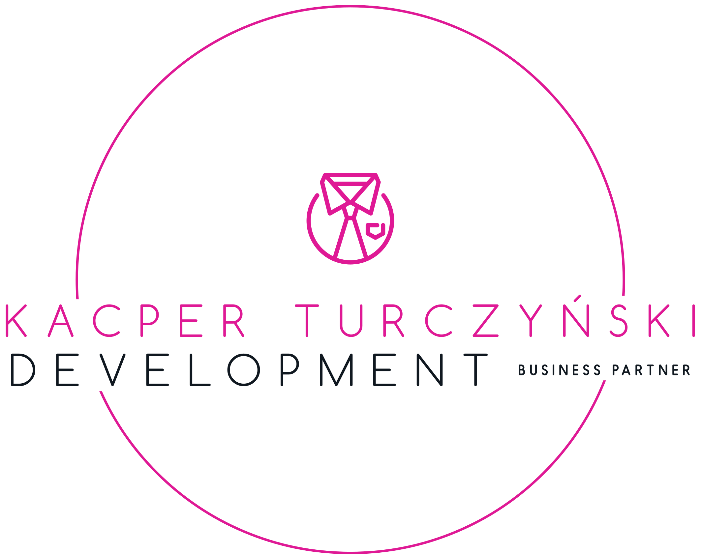

Decyzje, które zakrzywiają rzeczywistość
KT DEVELOPMENT to firma doradczo-strategiczna, która łączy technologię, AI i ludzką świadomość w jednym celu – by rzeczy działały lepiej, szybciej i mądrzej.
Skontaktuj sięKT DEVELOPMENT to firma doradczo-strategiczna, która łączy technologię, AI i ludzką świadomość w jednym celu – by rzeczy działały lepiej, szybciej i mądrzej.
Skontaktuj sięTwórca: Kacper Turczyński – doradca strategiczny, operator rzeczywistości, człowiek, który nie tylko rozumie AI, ale potrafi je zastosować w życiu i biznesie.
Wartości: Prawda, efektywność, wolność. Rola AI: partner, nie narzędzie.
Tu pojawią się treści o AI, strategii i podejmowaniu decyzji w XXI wieku.
Masz projekt lub potrzebujesz partnera do rozmowy strategicznej? Napisz: kontakt@ktdevelopment.pl